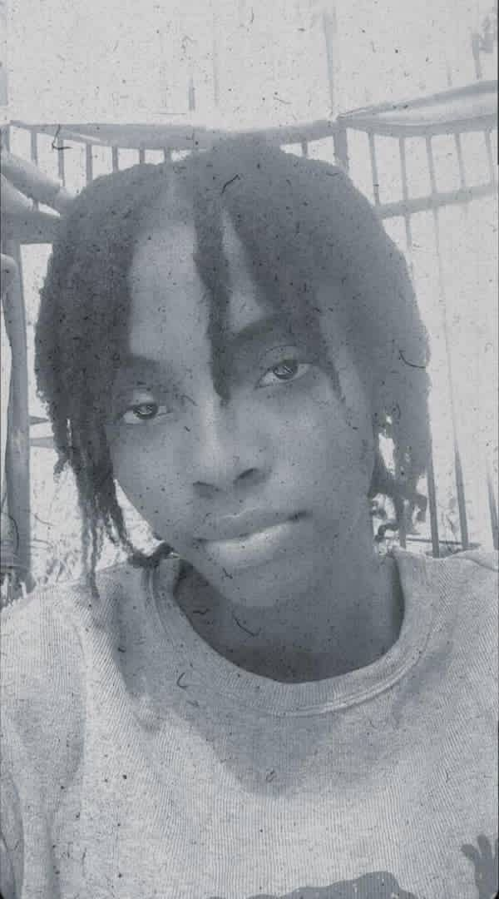
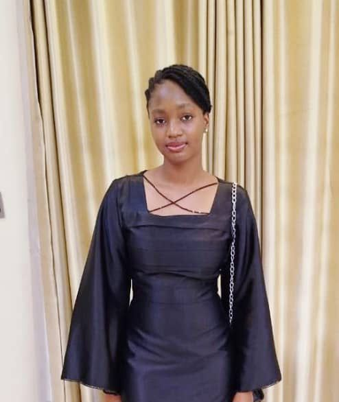

Name:
Position: Chief Executive Officer (CEO)
As the visionary behind Emeraldlane, our Chief Executive Officer provides both strategic direction and creative leadership for the entire fashion house. With a deep passion for elegance, innovation, and authenticity, he guides the brand's evolution—ensuring that every Emeraldlane creation reflects class, confidence, and individuality. His leadership is rooted in a desire to redefine modern African fashion and position it proudly on the global stage.
From concept to creation, his influence is visible in every detail of the Emeraldlane experience. He believes that fashion should tell a story—one that celebrates identity, culture, and creativity. Under his direction, the brand has become a symbol of refined craftsmanship and contemporary African sophistication. Each design embodies a fusion of tradition and modernity, capturing the spirit of Africa while appealing to a diverse, international audience.
His vision for Emeraldlane is built on more than aesthetics; it is grounded in purpose. He aims to empower individuals to express themselves through fashion that mirrors confidence and pride. With a forward-thinking approach, he continuously explores new ways to blend sustainability, innovation, and artistry, ensuring that Emeraldlane remains at the forefront of the evolving fashion landscape.
As CEO, he oversees not only creative direction but also brand growth, partnerships, and global positioning. Through thoughtful strategy and bold innovation, he has strengthened Emeraldlane's identity as a lifestyle brand that transcends trends and seasons. His leadership has guided the fashion house toward new heights—expanding its reach while staying true to its essence of timeless elegance.
He is also a strong advocate for collaboration and community. Believing that African fashion has an important story to tell, he champions initiatives that spotlight local talent, craftsmanship, and design excellence. His goal is to create a platform where creativity thrives and African fashion earns its rightful place among the world's finest.
At the heart of his philosophy is the belief that fashion is an experience—a form of art that communicates who we are and what we value. Under his visionary leadership, Emeraldlane continues to inspire a generation that embraces sophistication not just as a look, but as a lifestyle.

Name: Precious Usman
Position: Creative Director
The Creative Director of Emeraldlane is the heartbeat of our design philosophy. She is the visionary who transforms imagination into reality—bringing fabrics, colors, and concepts to life through her exceptional artistry. With every sketch, texture, and silhouette, she channels creativity into designs that embody boldness, sophistication, and timeless beauty.
Her approach to fashion is deeply rooted in storytelling. Each collection begins with a narrative—an idea, emotion, or inspiration drawn from culture, nature, and the evolving world of modern style. She believes that fashion should evoke a feeling and create a connection. Under her creative direction, Emeraldlane's pieces don't just adorn the body; they speak to the soul, celebrating individuality, confidence, and grace.
From concept development to final runway presentation, she oversees the entire creative process with meticulous attention to detail. She collaborates closely with designers, pattern makers, and stylists to ensure that every collection reflects Emeraldlane's identity: elegant, innovative, and unmistakably African in essence. Her vision infuses each piece with purpose and artistry, creating garments that honor tradition while embracing modern design sensibilities.
Her creative leadership extends beyond aesthetics. She views fashion as a form of communication—a visual language that bridges cultures and generations. With her at the helm, Emeraldlane's collections consistently merge heritage and innovation, offering designs that are both contemporary and timeless. Whether it's the texture of a fabric, the rhythm of a print, or the silhouette of a dress, every detail reflects her pursuit of excellence and originality.
Driven by passion and guided by intuition, she constantly reimagines what African fashion can represent on the global stage. Her work captures the spirit of self-expression, empowering individuals to wear their confidence with pride. Through her designs, Emeraldlane continues to redefine elegance—not as luxury alone, but as an experience of identity and artistry.
As the Creative Director, she is not just creating clothes—she is crafting moments, moods, and memories. Her dedication to innovation ensures that every Emeraldlane collection stands as a celebration of beauty, strength, and individuality.

Name: Christiana Okokon Iniobong
Position: Marketing & Brand Manager
As the Marketing and Brand Manager of Emeraldlane, she is the creative mind behind the brand's distinctive voice and visual identity. With a natural flair for style and an intuitive sense of storytelling, she ensures that every message, image, and campaign reflects the brand's promise of elegance, pride, and inspiration.
Her work goes beyond promotion—it's about crafting an experience. She understands that fashion is more than clothing; it is an expression of identity, confidence, and culture. Every collection tells a story, and she ensures that each story resonates with those who wear Emeraldlane. From campaign design to client engagement, she brings the brand to life through meaningful narratives that celebrate individuality and timeless sophistication.
With a keen eye for aesthetics, she harmonizes visual creativity with strategic thinking. She oversees brand communication across all platforms—digital, print, and in-person—ensuring that every interaction with Emeraldlane feels intentional and inspiring. Through her leadership, the brand's image remains consistent, modern, and true to its roots in refined elegance.
Her approach to marketing is both artistic and analytical. She blends creativity with data-driven insight, studying audience behavior and engagement trends to refine how Emeraldlane connects with its growing community. Whether it's developing seasonal campaigns, curating photoshoots, or managing collaborations, she brings clarity and purpose to every project, ensuring that the brand continues to evolve while staying authentic to its vision.
She is passionate about building relationships that go beyond the transactional. To her, every client interaction is an opportunity to create an emotional connection—one that inspires pride and loyalty. She believes that when a brand truly understands its audience, it transforms fashion into a shared language of self-expression and confidence.
Under her direction, Emeraldlane's marketing presence has flourished, becoming a reflection of grace, empowerment, and originality. Each campaign captures not just the beauty of fashion, but the spirit of those who wear it. Through her work, the brand continues to stand out as a symbol of refined taste and modern artistry.
Driven by creativity and guided by strategy, she continues to redefine what it means to tell a brand story.

Name: Chetanna Igboelina
Position: Head of Fashion Design
At the heart of Emeraldlane's creative excellence stands our Head of Fashion Design — a visionary whose passion, artistry, and precision define the essence of our brand. She leads the design team with a blend of creativity, strategy, and craftsmanship, ensuring that every Emeraldlane piece reflects the sophistication and confidence that our fashion house represents.
With a keen eye for detail and an intuitive understanding of trends, she transforms inspiration into tangible art. Her creative direction bridges the past and the present — merging timeless tradition with bold innovation. Each design begins as a concept drawn from culture, emotion, and experience, and is refined through careful sketching, fabric selection, and tailoring excellence. Under her leadership, the design team transforms these ideas into ready-to-wear and couture pieces that celebrate individuality and elegance.
Her design philosophy rests on the belief that true style is both expressive and enduring. She approaches fashion as a form of storytelling — where every seam, texture, and silhouette conveys purpose. Whether it's a classic evening gown that captures grace or a contemporary piece that redefines modern luxury, her work ensures that Emeraldlane consistently sets the tone for excellence in African-inspired global fashion.
Beyond aesthetics, she is deeply committed to quality. Her background in garment construction and technical design ensures that every creation meets the highest standards of craftsmanship. From fabric sourcing to final fittings, her meticulous attention to detail guarantees that each Emeraldlane piece not only looks exceptional but also feels perfect to wear. It is this dedication to form, function, and finish that makes Emeraldlane designs distinctive on every runway and in every wardrobe.
Her leadership extends beyond creativity — she inspires collaboration and nurtures emerging talent within the team. By fostering an environment that values innovation, precision, and learning, she ensures that every member of the Emeraldlane creative unit contributes to the brand's evolving story. Her approach combines mentorship with vision, allowing the team to continually explore new design techniques, sustainable practices, and fashion technologies that keep Emeraldlane at the forefront of the industry.
Her influences range from global fashion movements to the richness of African heritage.

Position: Fashion Stylist
At Emeraldlane, style is more than clothing—it is a statement, a story, and an experience. Guiding this vision is our Fashion Stylist, whose artistry and expertise bring each look to life with precision, elegance, and purpose. She curates the perfect ensembles for Emeraldlane's campaigns, clients, and high-profile events, transforming garments into expressions of confidence and individuality.
Her approach to styling is both thoughtful and instinctive. With a sharp eye for color, texture, silhouette, and proportion, she ensures that every outfit enhances the wearer's personality while staying true to the brand's aesthetic. Each combination she creates—whether for a fashion editorial, runway presentation, or client consultation—is carefully considered, striking a balance between trend-conscious innovation and timeless sophistication.
The stylist's work embodies Emeraldlane's commitment to storytelling through fashion. Every ensemble is designed to communicate an emotion, a mood, or a concept. She understands that clothing is a powerful tool for self-expression, and her styling transforms individual pieces into cohesive narratives that resonate with audiences. From dramatic statement looks to subtle, refined combinations, her styling choices elevate the overall presentation, leaving a lasting impression.
Her expertise extends beyond traditional styling techniques. She is adept at working with diverse fabrics, patterns, and designs, ensuring that each outfit not only looks flawless but also functions seamlessly for movement, comfort, and occasion. She collaborates closely with the design and creative teams, translating Emeraldlane's vision into tangible, memorable looks that highlight the brand's attention to detail and commitment to quality.
The stylist also plays a pivotal role in client engagement, offering personalized guidance that enhances individual style. Whether preparing clients for public appearances, photo shoots, or special events, she tailors every look to suit personality, body type, and occasion. Her ability to anticipate trends while maintaining the brand's unique identity ensures that Emeraldlane clients experience fashion that is both contemporary and classic.
Collaboration, creativity, and innovation define her daily practice. She partners with photographers, designers, and creative directors to craft visuals that capture the essence of each collection.